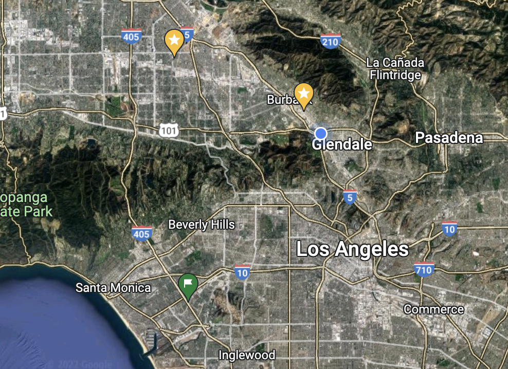

Deep dish pizza recipe here!
Taro Boba tea recipe here!
Mexican torta recipe here!
We started out as a small recipe book made from adventuring around our city into see what foods are trending. We would go around looking for the recipes that would catch our eye and even see which ones were trending the most on social media. From a small recipe book we knew we needed more space and even liked to share our recipes with other people. As we optimize and even test many recipes, we will upload some slowly so we know people who decide to make them will enjoy them!
While we don't really have a set location or address, you can find us traveling around from restaurant to restaurant looking for the perfect recipe to upload into our data recipe book. Our main hotspots are near the Santa Monica Pier to even up north in the city of Glendale near the bakery. 